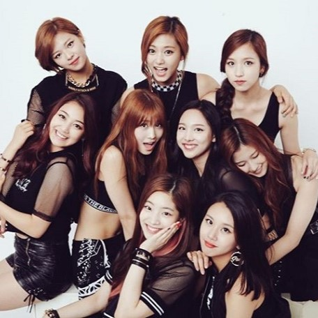

Twice has a really special place in my heart. This group formed from the first K-Pop survival show I've ever seen, JYP Sixteen. They debuted in 2015 with nine members, Nayeon, Jeongyeon, Momo, Sana, Jihyo, Mina, Dahyun, Chaeyoung, and Tzuyu. Of all of their music, I want to learn the dance to Like OOH-AHH the most, just because of how catchy the song is!